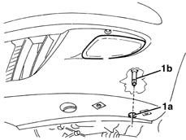

5540D38 fog lamp beam - adjust
- Path
- Procedures > 55 ELECTRICAL EQUIPMENT > 5540 EXTERIOR LIGHTING > 5540D fog lamps > 5540D38 fog lamp beam - adjust
- Kind
- repair procedure (removal / refitting; the operation number is the code)
- Applies to
- all engines; all production periods
- Interactive page
- https://sloeber94.github.io/elrnDB-lYpsln/en/#/2429420
Applies to: all engines; all production periods
Prepare the vehicle complete with spare wheel, tools, fluids, fuel reserve.
Check that the tyre inflation pressure is correct.
Position the vehicle on a flat surface, perpendicular to a screen or an opaque surface, 10 metres away, which contains a line corresponding to the height from the ground (A) of the centre of the fog lamps.
1. Switch on the fog lamps and, through the opening (1a), act on the adjustment screw (1b) so that the demarcation line between the area that is dark and the area that is lit up by the luminous beam is at height B = (2/3 A - 13) cm.
